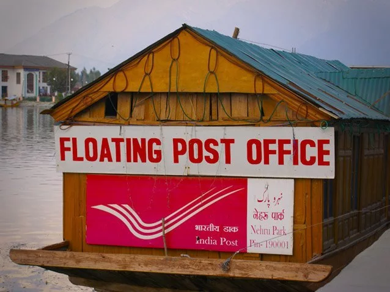
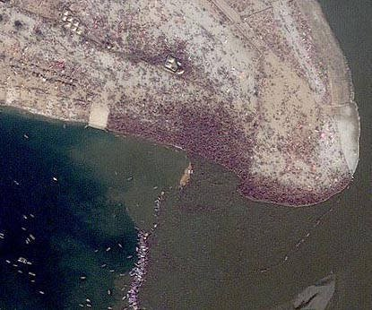
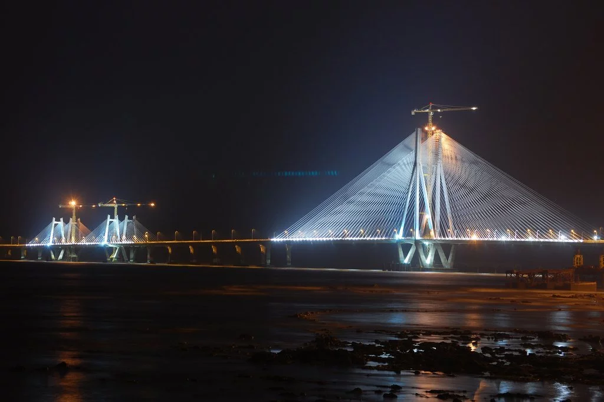
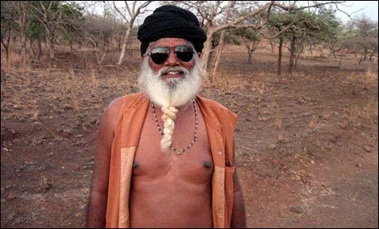
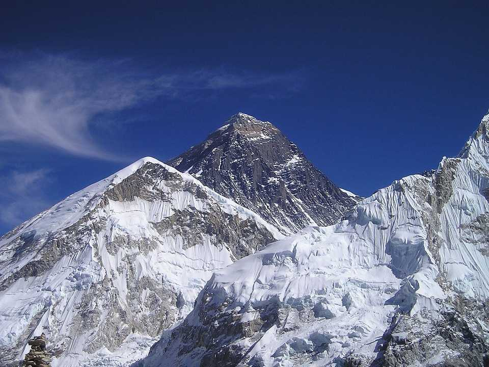
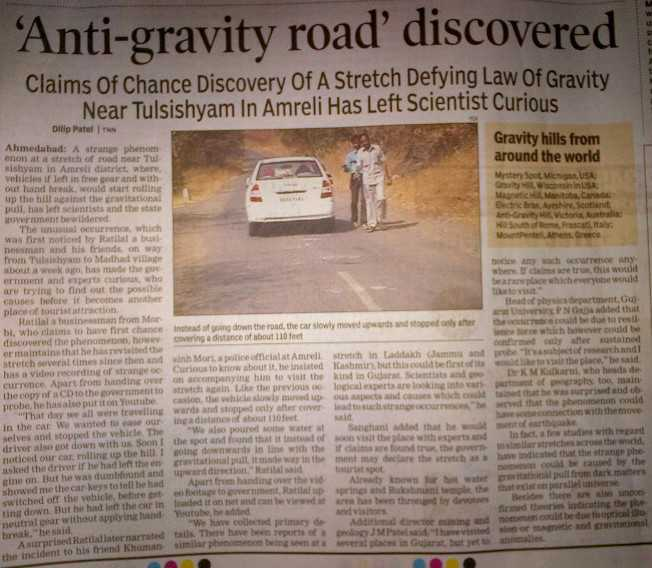

- A floating Post Office.
- The Kumbh Mela gathering was visible from space.
- Mawsynram - The wettest inhabited place in the world.
- Bandra Worli Sealink has steel wires equal to the earth's circumference.
- The first rocket in India was transported on a cycle.
- Poll Booth for Single Voter.
- The Only Country With a Bill of Rights for Cows.
- The Number of People Travelling in the Indian Railways Every Day is Equal to the Population of Australia.
- The Himalayas Have 9 out of 10 World's Highest Peaks.
- Tulsi Shyam - The hills that Defy Gravity.









